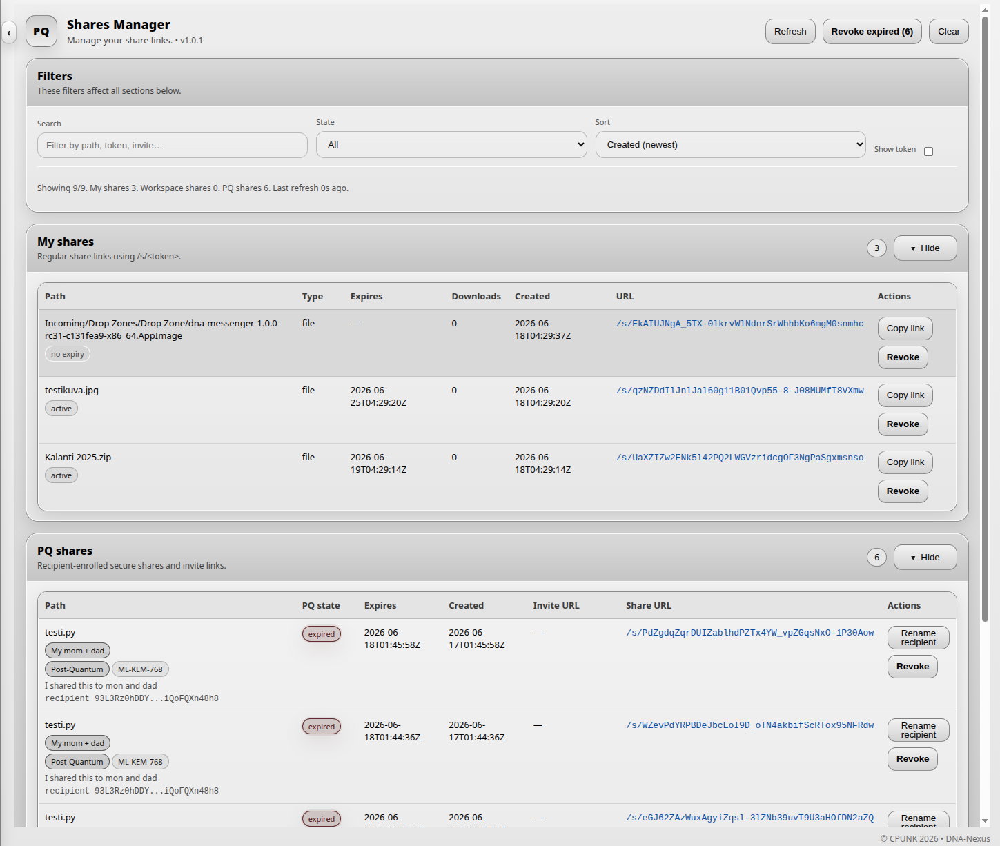
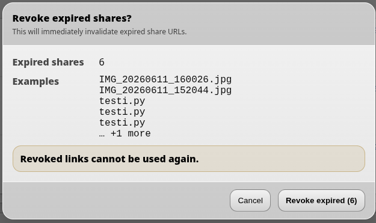
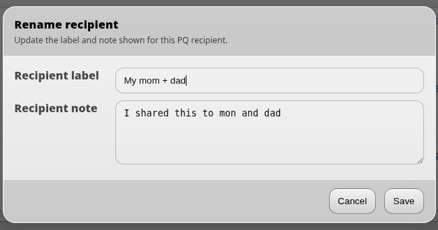

Shares Manager
Shares Manager is used to manage file share links that the user has created and sent to others.
Overview
In Shares Manager, the user manages the file share links they have created and sent to others. The page shows what has been shared, which links are still active and which links have already expired.

Revoking expired links
Expired share links can be cleaned up in one step. Use the Revoke expired button to revoke all expired share links at once.

PQ shares
Post-quantum (PQ) shares are managed a little differently from normal share links. Because a PQ share can only be opened by one recipient, it is useful to add a note or name describing who the link was shared with.
This makes it easier later to see what was shared and with whom.
